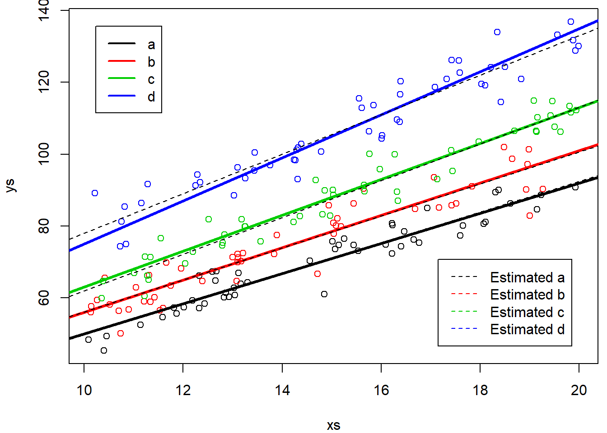

Chapter 8 Class 11: 03 10 2020 ANCOVA with different slopes: interactions
The previous model assumed that the slopes were the same across the different groups. What woud change if they were different? We extend the previous case to where the slope of the relationship is also different per treatment.
Simulate treatments, same as before, but this gives us the option to change later separately if we want.
#----------------------------------------------------------------
#all slopes different
set.seed(1234)
xs <- runif(200,10,20)
tr <- c("a","b","c","d")
type <- rep(tr,each=50)
cores <- rep(1:4,each=50)Now we simulate the response
ys=3+
ifelse(type=="a",5,ifelse(type=="b",8,ifelse(type=="c",10,12)))+
4*xs+ifelse(type=="a",0.2,ifelse(type=="b",0.5,ifelse(type=="c",1,2)))*xs+
rnorm(200,0,4)note this is the same as what we have below, but below it might be simpler to understand that these do correspond to different intercepts and slopes per treatment
#same as
intercept=3+ifelse(type=="a",5,ifelse(type=="b",8,ifelse(type=="c",10,12)))
slope=xs*(4+ifelse(type=="a",0.2,ifelse(type=="b",0.5,ifelse(type=="c",1,2))))
ys=slope+intercept+rnorm(200,0,4)We can look at the data
par(mfrow=c(1,2),mar=c(4,4,0.5,0.5))
plot(xs,ys,col=cores)
abline(3+5,4+0.2,lwd=3,col=1)
abline(3+8,4+0.5,lwd=3,col=2)
abline(3+10,4+1,lwd=3,col=3)
abline(3+12,4+2,lwd=3,col=4)As before, it is actually not that easy to confirm the slopes and intercepts are different, as the intercept is not shown in the above plot. We can zoom out the plot and force that
plot(xs,ys,col=cores,xlim=c(0,20),ylim=c(0,150))
abline(3+5,4+0.2,lwd=3,col=1)
abline(3+8,4+0.5,lwd=3,col=2)
abline(3+10,4+1,lwd=3,col=3)
abline(3+12,4+2,lwd=3,col=4)
abline(h=c(3+5,3+8,3+10,3+12),v=0,col=c(1,2,3,4,1),lty=2)Now, we implement the ANCOVA linear model, but with an interaction term!
and we look at the output of the model
##
## Call:
## lm(formula = ys ~ xs + type + xs * type)
##
## Residuals:
## Min 1Q Median 3Q Max
## -13.2514 -2.7831 -0.2006 3.0000 10.1051
##
## Coefficients:
## Estimate Std. Error t value Pr(>|t|)
## (Intercept) 7.0480 3.4994 2.014 0.045397 *
## xs 4.2667 0.2345 18.198 < 2e-16 ***
## typeb 4.5418 4.6361 0.980 0.328489
## typec 3.7997 4.7096 0.807 0.420787
## typed 15.9380 4.8844 3.263 0.001305 **
## xs:typeb 0.1848 0.3160 0.585 0.559468
## xs:typec 0.8442 0.3103 2.721 0.007106 **
## xs:typed 1.2325 0.3203 3.848 0.000162 ***
## ---
## Signif. codes: 0 '***' 0.001 '**' 0.01 '*' 0.05 '.' 0.1 ' ' 1
##
## Residual standard error: 4.331 on 192 degrees of freedom
## Multiple R-squared: 0.9578, Adjusted R-squared: 0.9562
## F-statistic: 622.3 on 7 and 192 DF, p-value: < 2.2e-16check how this is an output similar to the ANOVA (implemented via aov, the R function that produces ANOVA tables from expressions akin to linear models)
## Df Sum Sq Mean Sq F value Pr(>F)
## xs 1 48776 48776 2600.680 < 2e-16 ***
## type 3 32550 10850 578.501 < 2e-16 ***
## xs:type 3 379 126 6.742 0.000239 ***
## Residuals 192 3601 19
## ---
## Signif. codes: 0 '***' 0.001 '**' 0.01 '*' 0.05 '.' 0.1 ' ' 1Note that the overall F statistic from the regression model has an F-statistic of 622.3, with 7 and 192 degrees of freedom. That corresponds to the composite test with the null hypothesis “are all parameters equal to 0”, which in the ANOVA table, is separated in 3 testes, one for each parameter, with 1, 3 and 3 degrees of freedom each. The residual degrees of freedom are naturally the same in all these tests.
The most interesting aspect it that, naturally, we can check the values of the estimated coefficients, and in particular how to estimate the corresponding regression lines per group
## (Intercept)
## 7.048022## xs
## 4.266671## (Intercept)
## 11.5898## xs
## 4.451449## (Intercept)
## 10.84769## xs
## 5.110884## (Intercept)
## 22.98597## xs
## 5.499171we can now add these to the earlier plots, to see how well we have estimated the different lines per treatment
#real lines
par(mfrow=c(1,1),mar=c(4,4,0.5,0.5))
plot(xs,ys,col=cores)
abline(3+5,4+0.2,lwd=3,col=1)
abline(3+8,4+0.5,lwd=3,col=2)
abline(3+10,4+1,lwd=3,col=3)
abline(3+12,4+2,lwd=3,col=4)
#estimated lines
#type a
abline(lm.ancova2$coefficients[1],lm.ancova2$coefficients[2],lty=2,col=1)
#type b
abline(lm.ancova2$coefficients[1]+lm.ancova2$coefficients[3],
lm.ancova2$coefficients[2]+lm.ancova2$coefficients[6],lty=2,col=1)
#type c
abline(lm.ancova2$coefficients[1]+lm.ancova2$coefficients[4],
lm.ancova2$coefficients[2]+lm.ancova2$coefficients[7],lty=2,col=1)
#type b
abline(lm.ancova2$coefficients[1]+lm.ancova2$coefficients[5],
lm.ancova2$coefficients[2]+lm.ancova2$coefficients[8],lty=2,col=1)
legend("topleft",legend = tr,lwd=2,col=1:4,inset=0.05)
legend("bottomright",legend =paste("Estimated",tr),lwd=1,lty=2,col=1:4,inset=0.05)
Remember, if this was a real analysis, you would not know the truth, so at best, you would be able to see the predicted lines, but not the real lines, just as in the plot below
# In real life, we only see this
plot(xs,ys,col=cores)
#plot the lines
abline(lm.ancova2$coefficients[1],lm.ancova2$coefficients[2],lwd=1,col=1,lty=2)
abline(lm.ancova2$coefficients[1]+lm.ancova2$coefficients[3],lm.ancova2$coefficients[2],lwd=1,col=2,lty=2)
abline(lm.ancova2$coefficients[1]+lm.ancova2$coefficients[4],lm.ancova2$coefficients[2],lwd=1,col=3,lty=2)
abline(lm.ancova2$coefficients[1]+lm.ancova2$coefficients[5],lm.ancova2$coefficients[2],lwd=1,col=4,lty=2)
legend("bottomright",legend =paste("Estimated",tr),lwd=1,lty=2,col=1:4,inset=0.05)8.1 Modeling a data set
In a given dataset we might want to know if the interaction is needed or not, or in other words, if the different lines might have different slopes, or not.
We illustrate that with the data set data4lines.csv that we conseidered before (add link here!)
folder<-"extfiles/"
#folder<-"../Aula7 14 10 2020/"
d4l <- read.csv(file=paste0(folder,"data4lines.csv"))
n <- nrow(d4l)And now we fit a model without interaction, as we did before,
##
## Call:
## lm(formula = y ~ x + z, data = data4lines)
##
## Residuals:
## Min 1Q Median 3Q Max
## -90.01 -35.01 2.54 35.51 108.10
##
## Coefficients:
## Estimate Std. Error t value Pr(>|t|)
## (Intercept) 45.51813 13.83069 3.291 0.00128 **
## x 0.39657 0.02516 15.763 < 2e-16 ***
## zb 54.92376 12.11597 4.533 1.28e-05 ***
## zc 128.20339 11.72572 10.934 < 2e-16 ***
## zd 22.82412 10.26509 2.223 0.02787 *
## ---
## Signif. codes: 0 '***' 0.001 '**' 0.01 '*' 0.05 '.' 0.1 ' ' 1
##
## Residual standard error: 42.5 on 133 degrees of freedom
## Multiple R-squared: 0.7332, Adjusted R-squared: 0.7252
## F-statistic: 91.38 on 4 and 133 DF, p-value: < 2.2e-16and after a model with the interaction term
##
## Call:
## lm(formula = y ~ x + z + x:z, data = data4lines)
##
## Residuals:
## Min 1Q Median 3Q Max
## -77.569 -15.787 2.848 17.776 60.875
##
## Coefficients:
## Estimate Std. Error t value Pr(>|t|)
## (Intercept) -84.72064 19.98946 -4.238 4.24e-05 ***
## x 0.69346 0.04380 15.831 < 2e-16 ***
## zb 109.96907 25.87243 4.250 4.04e-05 ***
## zc 187.01780 24.87546 7.518 8.03e-12 ***
## zd 223.27435 21.82006 10.233 < 2e-16 ***
## x:zb -0.08161 0.06222 -1.312 0.192
## x:zc -0.08902 0.05954 -1.495 0.137
## x:zd -0.49630 0.04926 -10.075 < 2e-16 ***
## ---
## Signif. codes: 0 '***' 0.001 '**' 0.01 '*' 0.05 '.' 0.1 ' ' 1
##
## Residual standard error: 28.09 on 130 degrees of freedom
## Multiple R-squared: 0.8861, Adjusted R-squared: 0.88
## F-statistic: 144.5 on 7 and 130 DF, p-value: < 2.2e-16It seems like, based on AIC, the second model is best! Which makes total sence, since that indeed we had one line for one of the groups (z) that had a different slope! And that is the significant interaction term above, indicating it is different from the slope of group a.
## df AIC
## lmANC 6 1433.414
## lmlinesI 9 1321.927Now lets go back to the data. Remember a plot we had on this dataset before?
We noted the plot was messy, including the pooled regression (the thick black line), the regressions fitted to independent data sets, one for each species (museums before!) (the solid lines), and the regressions resulting from the model with species as a factor covariate (dotted-dashed lines).
#plot all the data
plot(y~x,col=as.numeric(as.factor(z)),data=data4lines,pch=1)
#completely independet regression lines
abline(lm(y~x,data=data4lines[data4lines$z=="a",]),col=1,lty=4)
abline(lm(y~x,data=data4lines[data4lines$z=="b",]),col=2,lty=4)
abline(lm(y~x,data=data4lines[data4lines$z=="c",]),col=3,lty=4)
abline(lm(y~x,data=data4lines[data4lines$z=="d",]),col=4,lty=4)
#these are the wrong lines... why?
abline(lmlinesG,lwd=3,lty=2)
abline(lmANC$coefficients[1],lmANC$coefficients[2],col=1)
abline(lmANC$coefficients[1]+lmANC$coefficients[3],lmANC$coefficients[2],col=2)
abline(lmANC$coefficients[1]+lmANC$coefficients[4],lmANC$coefficients[2],col=3)
abline(lmANC$coefficients[1]+lmANC$coefficients[5],lmANC$coefficients[2],col=4)Now we can remove the independent lines (to clean it up a bit!) and just leave the no interaction model estimated values, then add the estimated lines from the interaction model below. Remember, AIC says it’s the ones from the interactioon model that are the best representation of the data.
#plot all the data
plot(y~x,col=as.numeric(as.factor(z)),data=data4lines,pch=1)
# #completely independent regression lines
# abline(lm(y~x,data=data4lines[data4lines$z=="a",]),col=1,lty=4)
# abline(lm(y~x,data=data4lines[data4lines$z=="b",]),col=2,lty=4)
# abline(lm(y~x,data=data4lines[data4lines$z=="c",]),col=3,lty=4)
# abline(lm(y~x,data=data4lines[data4lines$z=="d",]),col=4,lty=4)
# no interaction lines
abline(lmANC$coefficients[1],lmANC$coefficients[2],col=1)
abline(lmANC$coefficients[1]+lmANC$coefficients[3],lmANC$coefficients[2],col=2)
abline(lmANC$coefficients[1]+lmANC$coefficients[4],lmANC$coefficients[2],col=3)
abline(lmANC$coefficients[1]+lmANC$coefficients[5],lmANC$coefficients[2],col=4)
# model with interaction lines
abline(lmlinesI$coefficients[1],lmlinesI$coefficients[2],col=1,lty=5)
abline(lmlinesI$coefficients[1]+lmlinesI$coefficients[3],lmlinesI$coefficients[2]+lmlinesI$coefficients[6],col=2,lty=5)
abline(lmlinesI$coefficients[1]+lmlinesI$coefficients[4],lmlinesI$coefficients[2]+lmlinesI$coefficients[7],col=3,lty=5)
abline(lmlinesI$coefficients[1]+lmlinesI$coefficients[5],lmlinesI$coefficients[2]+lmlinesI$coefficients[8],col=4,lty=5)Likewise, we could compare the lines from independent lines to those of the interaction model.
#plot all the data
plot(y~x,col=as.numeric(as.factor(z)),data=data4lines,pch=1)
#completely independent regression lines
abline(lm(y~x,data=data4lines[data4lines$z=="a",]),col=1,lty=4)
abline(lm(y~x,data=data4lines[data4lines$z=="b",]),col=2,lty=4)
abline(lm(y~x,data=data4lines[data4lines$z=="c",]),col=3,lty=4)
abline(lm(y~x,data=data4lines[data4lines$z=="d",]),col=4,lty=4)
# model with interaction lines
abline(lmlinesI$coefficients[1],lmlinesI$coefficients[2],col=1,lty=5)
abline(lmlinesI$coefficients[1]+lmlinesI$coefficients[3],lmlinesI$coefficients[2]+lmlinesI$coefficients[6],col=2,lty=5)
abline(lmlinesI$coefficients[1]+lmlinesI$coefficients[4],lmlinesI$coefficients[2]+lmlinesI$coefficients[7],col=3,lty=5)
abline(lmlinesI$coefficients[1]+lmlinesI$coefficients[5],lmlinesI$coefficients[2]+lmlinesI$coefficients[8],col=4,lty=5)
It is interesting to see that they are not very different, which is perhaps surprising but… actually… not surprising. Both use exaclty 8 parameters to describe the data… it’s the same thing!!! Linear models are cool :)
8.2 Conclusion
The material in this and the last 3 lectures allows you to fully understand the outputs of simple regression models, and to see how some statistical models that you know from other names are just a linear model.
It also helps you understand how the parameter values represent just features of the data and its generating process, and how we can recover estimates of the original relationships between the variables from said set of parameters.
I recommend you explore the code and output above, and that in particular you experiment with changing means (parameter values for the real models), variances (the precision of how you would measure variables) and sample sizes (which gives you an indication of how much information you have to estimate the underlying reality). Understanding the outputs under these new scenarios is fundamental for progressing towards more complex regression models, like GLMs or GAMs, of which the above cases are just particular cases.
Many additional interesting links on linear models exist online. This is just one of them: https://data-flair.training/blogs/r-linear-regression-tutorial/